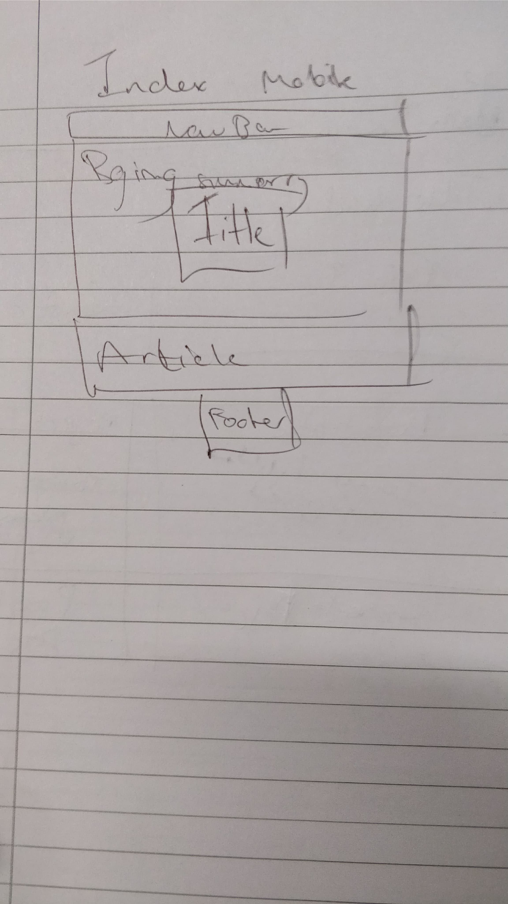
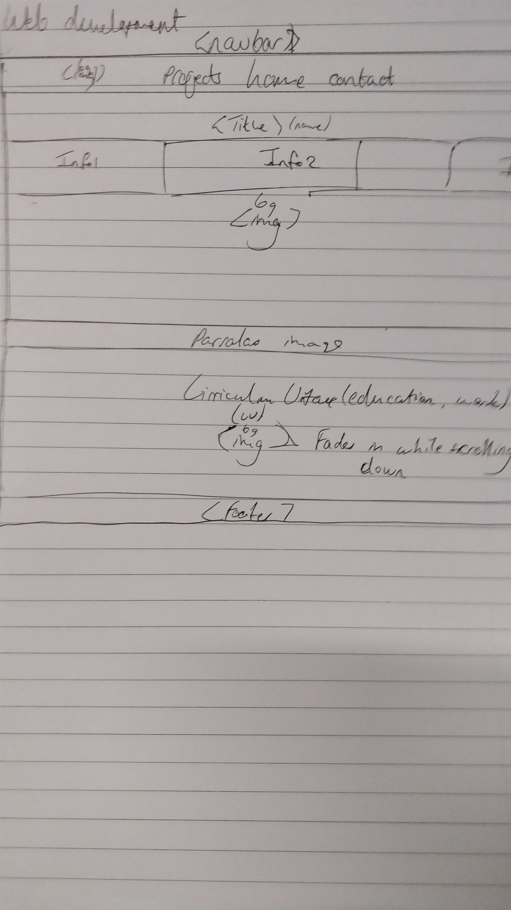
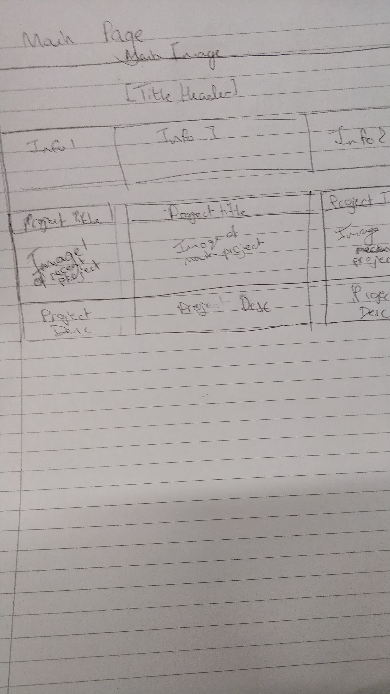

Report: Large Coursework
Jay King
Introduction: What is the essential story being told by your site and what type of structure
did you choose to implement.
The story that I chose for my website was my personal portfolio, this will just allow me to have something if I ever want to have my own personal website. I believe that I will continue to develop my website after I have submitted this website. The structure that I wished to implement was a one whole page type which would allow me to keep all of my content within one place.
State 3 things that have inspired you when creating your website. These could include
guest speakers, other websites, artists, developers etc.
My design of my website hasn't really been inspired by certain websites that I have seen, more like a compilation of what I like within all present websites.
State 3 ways in which your site is accessible.
I have only one feature that has made my site more accessible, this is the button in the bottom right portion of the site that allows the user to click it then go straight back up to the top of the webpage.
Another that is kind of an accessibility feature is that when the user is attempting to load the site on a mobile device, then they will always have the nav bar on the top of the browser, and all of the content has been proportioned to their device.
State 3 ways in which you have considered usability in your site.
One thing, using CSS, I have made everything proportioned to specific devices, there are two modes that are described as mobile and desktop. Desktop is the normal version, mobile is a more compressed version that just compresses the information into the device's viewport.
I have also included a feature that includes my Twitch livestream and chat that are realtime, so that when I start streaming on Twitch, people, whoever they are, will be able to watch in on my website, be the content games or programming.
State 3 things you had to learn/find out by yourself when creating your site, and describe
how you did that (i.e. what searches you did, any new tools/techniques you learned, any
changes/adaptations you made to a particular resource to make it work with your site).
I learned how to correctly proportion all of the content within my site, be it a mobile or desktop variant. At times it was tricky, but all was well in the end as everything came together.
At first I was going to have a mutli-page website, but then I started dabbling with making a full-page website and started to see it as more elegant and more informative than a multi-page site.
What aspect(s) of your work do you think worked well and why?
I really like the design of my website, being it a full-page website, all of the content is just there, in one place.
I believe that the images that were included within the websites page complemented the content that can be found on each section, which may be easier for the user to understand what each section is at first glance.
What aspect(s) of your work could be improved, and how might you do things differently
another time?
I believe that the accessibility of my website can be improved in many ways, some being that I should include an alt for all of my images, although most of my images are just background images, so it doesn't ^really^ matter.
Within the navigation bar, I could have included links that when clicked, scroll to that respective part of the webpage, which allows for the user to instantly go somewhere that they would like instead of manually scrolling.
What resources were used when creating your work? You should list here any sources of
information, libraries, plug-ins or other code that you used to create your site. You should
also reference any code you've used by inserting comments at the start of the scripts.
Appendices: Wireframes and Screenshots
p5js.org, 'P5js Reference', 2017. [Online]. Available at: https://p5js.org/reference/. [Accessed: 20- Dec- 2017].
w3school.com, 'W3Schools Online Web Tutorials'. [Online]. Available at: https://www.w3schools.com/. [Accessed: 8- Nov- 2017].
The link to my landing page for my coursework is http://doc.gold.ac.uk/~jking005/portfolio/index.html. Use week 3 for my finalised site.



Here are some early wireframes that I were going to followed, but revised on.